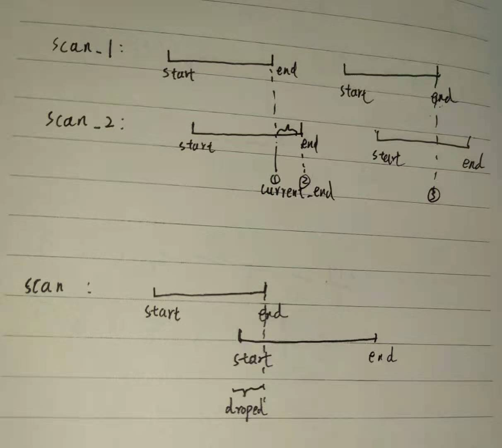

对雷达的同步的函数文件位于cartographer/mapping/internal/range_data_collator.cc文件中
同步雷达时间的类为RangeDataCollator
首先查看一下头文件，
构造函数 对expectedsensor_ids 进行赋值，注意expectedsensor_ids 他是一个集合
1 2 3 4 5 6 class RangeDataCollator { public : explicit RangeDataCollator ( const std::vector<std::string>& expected_range_sensor_ids) : expected_sensor_ids_(expected_range_sensor_ids.begin(), expected_range_sensor_ids.end()) { }
成员变量 1 2 3 4 const std::set<std::string> expected_sensor_ids_;std::map<std::string, sensor::TimedPointCloudData> id_to_pending_data_; common::Time current_start_ = common::Time::min (); common::Time current_end_ = common::Time::min ();
成员函数 此头文件只有两个函数，一个是AddRangeData，另外一个是CropAndMerge
1 2 3 4 5 6 7 8 9 sensor::TimedPointCloudOriginData AddRangeData ( const std::string& sensor_id, sensor::TimedPointCloudData timed_point_cloud_data) private : sensor::TimedPointCloudOriginData CropAndMerge () ;
AddRangeData AddRangeData 的功能为多个雷达时间同步，记录当前同步数据的开始时间和结束时间
1 2 3 4 5 6 7 8 9 10 11 12 13 14 15 16 17 18 19 20 21 22 23 24 25 26 27 28 29 30 31 32 33 34 35 36 37 38 39 40 41 42 43 44 45 46 47 48 49 50 51 52 sensor::TimedPointCloudOriginData RangeDataCollator::AddRangeData ( const std::string& sensor_id, sensor::TimedPointCloudData timed_point_cloud_data) CHECK_NE (expected_sensor_ids_.count (sensor_id), 0 ); timed_point_cloud_data.intensities.resize ( timed_point_cloud_data.ranges.size (), kDefaultIntensityValue); if (id_to_pending_data_.count (sensor_id) != 0 ) { current_start_ = current_end_; current_end_ = id_to_pending_data_.at (sensor_id).time; auto result = CropAndMerge (); id_to_pending_data_.emplace (sensor_id, std::move (timed_point_cloud_data)); return result; } id_to_pending_data_.emplace (sensor_id, std::move (timed_point_cloud_data)); if (expected_sensor_ids_.size () != id_to_pending_data_.size ()) { return {}; } current_start_ = current_end_; common::Time oldest_timestamp = common::Time::max (); for (const auto & pair : id_to_pending_data_) { oldest_timestamp = std::min (oldest_timestamp, pair.second.time); } current_end_ = oldest_timestamp; return CropAndMerge (); }
返回雷达的数据结构 1 2 3 4 5 6 7 8 9 10 11 struct TimedPointCloudOriginData { struct RangeMeasurement { TimedRangefinderPoint point_time; float intensity; size_t origin_index; }; common::Time time; std::vector<Eigen::Vector3f> origins; std::vector<RangeMeasurement> ranges; };
代码解析 点云传进来是没有强度的，所以忽略
1 2 3 // 从sensor_bridge传过来的数据的intensities为空 timed_point_cloud_data.intensities.resize( timed_point_cloud_data.ranges.size(), kDefaultIntensityValue);
如果同话题的点云, 还有没处理的, 就先处同步没处理的点云, 然后将当前点云保存。
这里的currentend 获取的是idto_pending_data 中点云的time属性，这就是一个点云最后一个点的时间
1 2 3 4 5 6 7 8 9 10 11 12 13 14 15 if (id_to_pending_data_.count (sensor_id) != 0 ) { current_start_ = current_end_; current_end_ = id_to_pending_data_.at (sensor_id).time; auto result = CropAndMerge (); id_to_pending_data_.emplace (sensor_id, std::move (timed_point_cloud_data)); return result; }
如果没有没有处理过的点云，则直接添加
1 2 3 4 5 6 id_to_pending_data_.emplace (sensor_id, std::move (timed_point_cloud_data)); if (expected_sensor_ids_.size () != id_to_pending_data_.size ()) { return {}; }
添加完之后，设置同步点云的开始时间和结束时间
1 2 3 4 5 6 7 8 9 10 11 current_start_ = current_end_; common::Time oldest_timestamp = common::Time::max (); for (const auto & pair : id_to_pending_data_) { oldest_timestamp = std::min (oldest_timestamp, pair.second.time); } current_end_ = oldest_timestamp; return CropAndMerge ();
CropAndMerge与解析 对时间段内的数据进行截取与合并, 返回时间同步后的点云。
重点： 雷达时间的同步即，把一段时间之内的雷达信息按照时间顺序再重新排一遍
把AddRangeData 之中已经确定了 这一段时间的 开始和结束时间，current_begin 和 current_end
1 2 3 4 5 6 7 8 9 10 11 12 13 14 15 16 17 18 19 20 21 22 23 24 25 26 27 28 29 30 31 32 33 34 35 36 37 38 39 40 41 42 43 44 45 46 47 48 49 50 51 52 53 54 55 56 57 58 59 60 61 62 63 64 65 66 67 68 69 70 71 72 73 74 75 76 77 78 79 80 81 82 83 84 85 86 87 88 89 90 91 92 93 94 sensor::TimedPointCloudOriginData RangeDataCollator::CropAndMerge () { sensor::TimedPointCloudOriginData result{current_end_, {}, {}}; bool warned_for_dropped_points = false ; for (auto it = id_to_pending_data_.begin (); it != id_to_pending_data_.end ();) { sensor::TimedPointCloudData& data = it->second; const sensor::TimedPointCloud& ranges = it->second.ranges; const std::vector<float >& intensities = it->second.intensities; auto overlap_begin = ranges.begin (); while (overlap_begin < ranges.end () && data.time + common::FromSeconds ((*overlap_begin).time) < current_start_) { ++overlap_begin; } auto overlap_end = overlap_begin; while (overlap_end < ranges.end () && data.time + common::FromSeconds ((*overlap_end).time) <= current_end_) { ++overlap_end; } if (ranges.begin () < overlap_begin && !warned_for_dropped_points) { LOG (WARNING) << "Dropped " << std::distance (ranges.begin (), overlap_begin) << " earlier points." ; warned_for_dropped_points = true ; } if (overlap_begin < overlap_end) { std::size_t origin_index = result.origins.size (); result.origins.push_back (data.origin); const float time_correction = static_cast <float >(common::ToSeconds (data.time - current_end_)); auto intensities_overlap_it = intensities.begin () + (overlap_begin - ranges.begin ()); result.ranges.reserve (result.ranges.size () + std::distance (overlap_begin, overlap_end)); for (auto overlap_it = overlap_begin; overlap_it != overlap_end; ++overlap_it, ++intensities_overlap_it) { sensor::TimedPointCloudOriginData::RangeMeasurement point{ *overlap_it, *intensities_overlap_it, origin_index}; point.point_time.time += time_correction; result.ranges.push_back (point); } } if (overlap_end == ranges.end ()) { it = id_to_pending_data_.erase (it); } else if (overlap_end == ranges.begin ()) { ++it; } else { const auto intensities_overlap_end = intensities.begin () + (overlap_end - ranges.begin ()); data = sensor::TimedPointCloudData{ data.time, data.origin, sensor::TimedPointCloud (overlap_end, ranges.end ()), std::vector<float >(intensities_overlap_end, intensities.end ())}; ++it; } } std::sort (result.ranges.begin (), result.ranges.end (), [](const sensor::TimedPointCloudOriginData::RangeMeasurement& a, const sensor::TimedPointCloudOriginData::RangeMeasurement& b) { return a.point_time.time < b.point_time.time; }); return result; }
可以看下面一段图，scan_1首先来一段数据，scan_2紧随其后，则
current_end为第一段的最后一个点的时间
current_begin 是一个很小的值
那么会把scan_1所有的数据先放入result，然后把scan_2的部分数据放入result。
最后按照每一个点的时间进行从小到大的排序进行返回
第二次时间同步，需要从AddRangeData中再一次确定curren_end.
current_end 为scan_2的最后一个点的值
current_begin 为第一次的current_end的值
直接把scan_2的第二段返回
